Brown bears (Ursus arctos) are large and powerful mammals with a wide
distribution spanning North America, Europe, and Asia. They are
characterized by their distinctive hump on the shoulders and can have
fur colors ranging from light brown to almost black. Adult males
typically weigh between approximately 272 to 680 kilograms, while
females are generally smaller, weighing between about 91 to 318
kilograms. Their height at the shoulder can vary but often falls
between approximately 1 to 1.5 meters.
Brown bears are incredibly adaptable, residing in diverse habitats
such as forests, tundra, and mountains. As omnivores, their diet is
varied, encompassing berries, fruits, nuts, grasses, insects, and,
when available, fish and mammals. During the summer, brown bears are
often seen fishing for salmon in rivers.
While generally solitary, brown bears may gather in areas with
abundant food, and females with cubs form family units. The bears
hibernate during the winter months, relying on stored fat to sustain
them through this period of reduced activity.
Conservation efforts are crucial to safeguard brown bears, as they
face threats like habitat loss, climate change, and conflicts with
humans. These iconic bears hold cultural significance in folklore and
mythology across various societies, symbolizing strength and
resilience. Preserving brown bears and their habitats is essential for
maintaining the ecological balance of the regions they inhabit.
Polar Bear
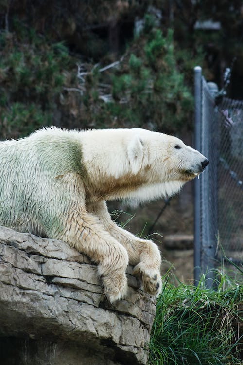
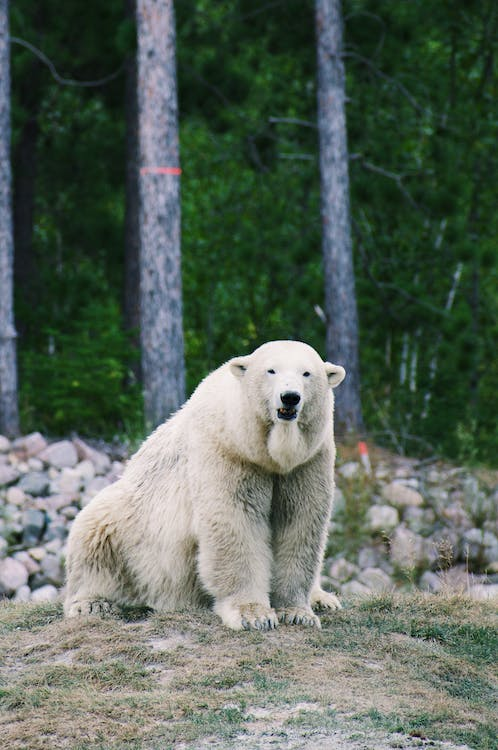
Polar bears (Ursus maritimus) are majestic carnivores uniquely adapted
to the icy landscapes of the Arctic Circle. Instantly recognizable by
their thick, white fur and powerful build, polar bears are the largest
land carnivores. Adult males typically weigh between 900 to 1,600
kilograms, with a shoulder height ranging from 1.2 to 1.6 meters.
These incredible bears are superbly adapted to their environment, with
their white fur providing camouflage in the snow and ice. They are
powerful swimmers and can cover long distances in search of their
primary prey, seals. Polar bears' paws are large and partially webbed,
aiding them in navigating across ice floes.
Polar bears are solitary creatures, and their survival is closely tied
to the availability of sea ice, which they use as a platform for
hunting. Climate change poses a significant threat to their habitat,
as the melting of sea ice impacts their ability to hunt and find
food.
Conservation efforts for polar bears focus on addressing climate
change, protecting their Arctic habitats, and mitigating human-bear
conflicts. These iconic bears serve as indicators of the health of the
Arctic ecosystem and are symbolic of the challenges faced by wildlife
in a changing climate.
Question time!
Sun Bear
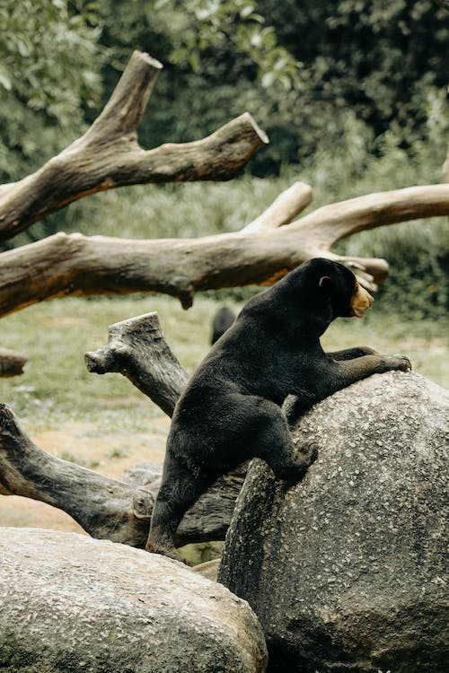
Sun bears (Helarctos malayanus) are captivating bears native to the
tropical forests of Southeast Asia. Distinguished by their sleek black
fur and a unique crescent-shaped marking on their chest, they are the
smallest of the bear species. Typically, adult sun bears weigh between
27 to 80 kilograms, with a height at the shoulder ranging from 0.9 to
1.2 meters.
These omnivores have a varied diet, including fruits, insects, honey,
and small vertebrates. Their long tongue, adapted for extracting
insects from tree bark, is a distinctive feature. Sun bears are known
for their climbing abilities and spend a significant amount of time in
trees.
Sun bears face threats such as habitat loss, poaching, and the illegal
pet trade, making conservation efforts crucial. Efforts focus on
protecting their tropical forest habitats and addressing
human-wildlife conflicts. Despite being the smallest bear species, sun
bears play a vital role in maintaining the biodiversity of their
ecosystems. Conservation initiatives aim to secure the future of these
unique bears and highlight their significance in Southeast Asian
biodiversity.
Panda Bear
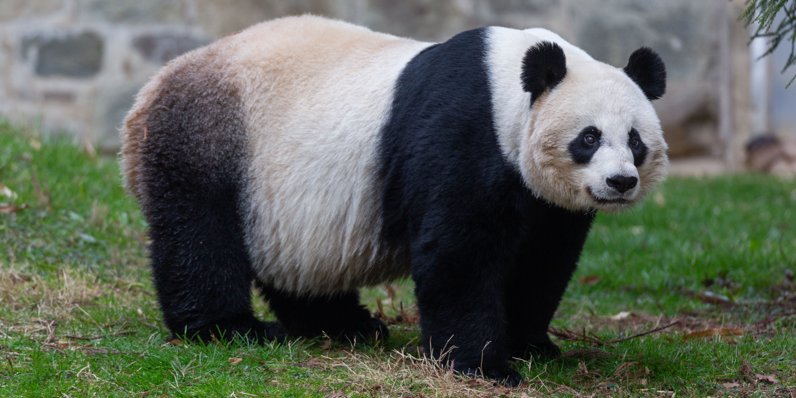
Giant pandas (Ailuropoda melanoleuca) are iconic bears native to the
mountainous regions of central China. Instantly recognizable by their
distinctive black-and-white fur, giant pandas are medium-sized bears
with an average weight ranging from approximately 90 to 136 kilograms
and a height at the shoulder of about 0.6 to 0.9 meters. These
herbivores primarily feed on bamboo, comprising over 99% of their
diet, supplemented occasionally with fruits and small mammals.
Giant pandas are solitary animals, and their gentle demeanor has
endeared them to people worldwide. Conservation efforts are critical
as they face threats like habitat loss and fragmentation. Breeding
programs and protected reserves aim to ensure the survival of this
endangered species. The panda's endearing appearance and cultural
significance make it a symbol of wildlife conservation and global
biodiversity efforts.
Question Time pt.2!
North American Black Bear
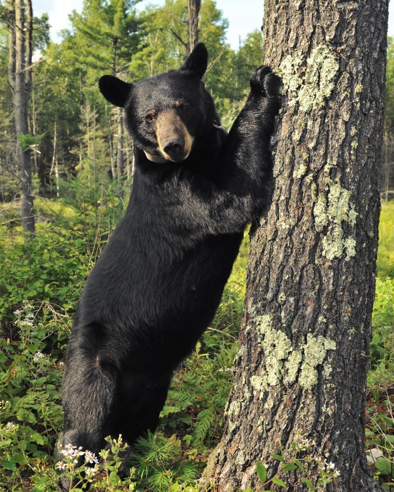
North American black bears (Ursus americanus) are versatile and
adaptable bears found in a variety of habitats across North America.
Their coat color can range from black to shades of brown, cinnamon, or
even white. Adult black bears typically weigh between 90 to 270
kilograms, with a shoulder height of about 0.7 to 1.2 meters.
Known for their intelligence and resourcefulness, black bears are
omnivores with a diet that includes berries, fruits, nuts, insects,
small mammals, and occasionally carrion. They are skilled climbers and
swimmers, enabling them to access a wide range of food sources and
escape potential threats.
Black bears are generally solitary animals, but they are not as
territorial as some other bear species. They can adapt to various
environments, including forests, mountains, and swamps. Their behavior
can be influenced by the availability of food and the presence of
other bears.
Conservation efforts for North American black bears focus on managing
human-bear conflicts, protecting habitats, and promoting coexistence.
Hunting regulations and habitat preservation play essential roles in
ensuring the well-being of these bears across their diverse range.
Black bears are a symbol of the wild landscapes they inhabit and the
importance of maintaining balanced ecosystems in North America.
Asiatic Black Bear
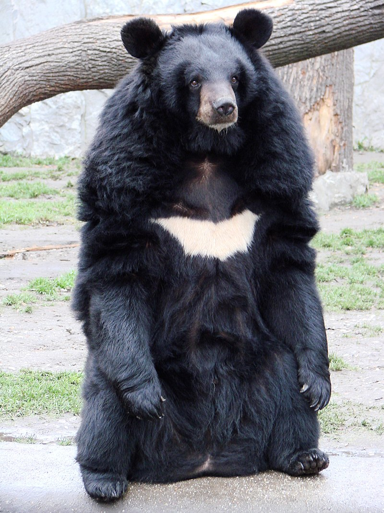
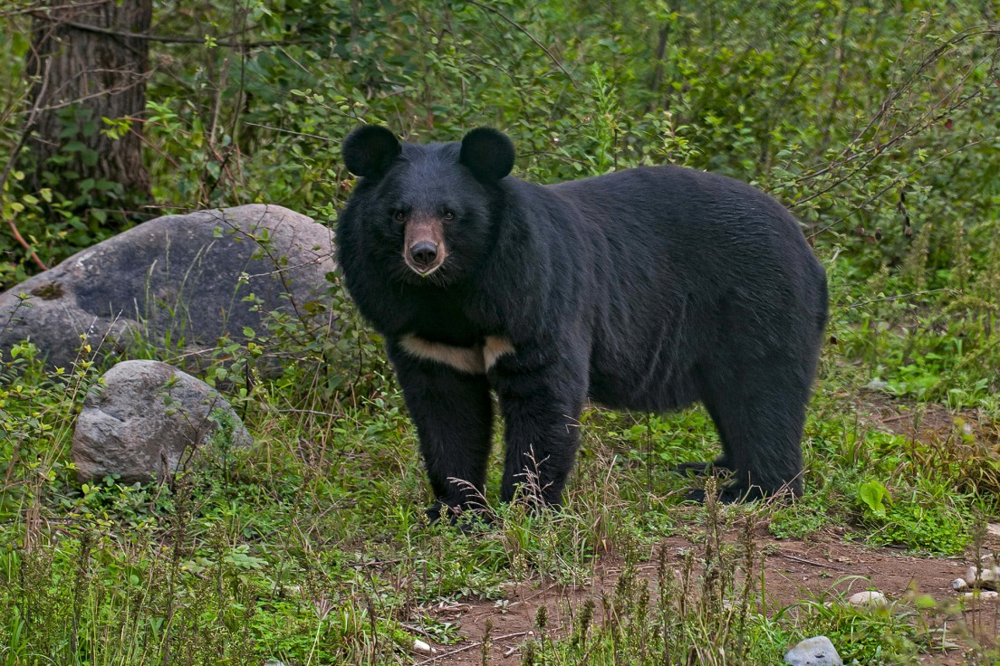
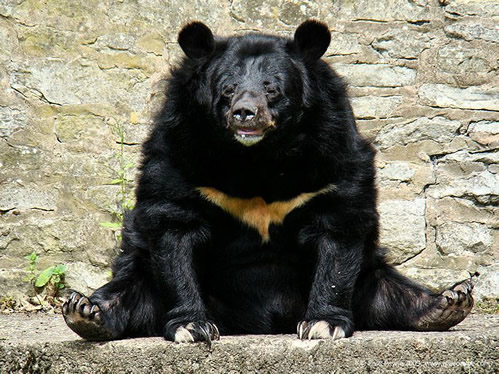
Asiatic black bears (Ursus thibetanus), also known as moon bears,
inhabit various ecosystems across Asia, from the Himalayas to
Southeast Asia. These bears exhibit a distinctive V-shaped white or
cream-colored chest mark. Their fur color can range from black to
brown, and they typically weigh between 90 to 200 kilograms, with a
shoulder height ranging from 0.9 to 1.2 meters.
As omnivores, Asiatic black bears have a diverse diet that includes
fruits, nuts, insects, small mammals, and vegetation. They are
excellent climbers and often build nests in trees for resting or
hibernating. These bears are known for their shy and elusive nature,
which makes them challenging to study in the wild.
While Asiatic black bears are generally solitary, they may come
together in small groups, especially during the breeding season. They
play a crucial role in shaping their ecosystems by dispersing seeds
and influencing vegetation through their feeding habits.
Conservation challenges for Asiatic black bears include habitat loss,
poaching, and conflicts with humans. Efforts focus on creating
protected areas, addressing illegal wildlife trade, and promoting
coexistence between bears and local communities. These bears hold
cultural significance in various Asian traditions and are emblematic
of the diverse and valuable wildlife found across the continent.
Every bear species ranked by population
Rank
Bear species
1
North American Black Bear
2
Brown Bear
3
Asiatic Black Bear
4
Polar Bear
5
Sloth Bear
6
Andean Bear
7
Panda Bear
8
Sun Bear
Andean Bear
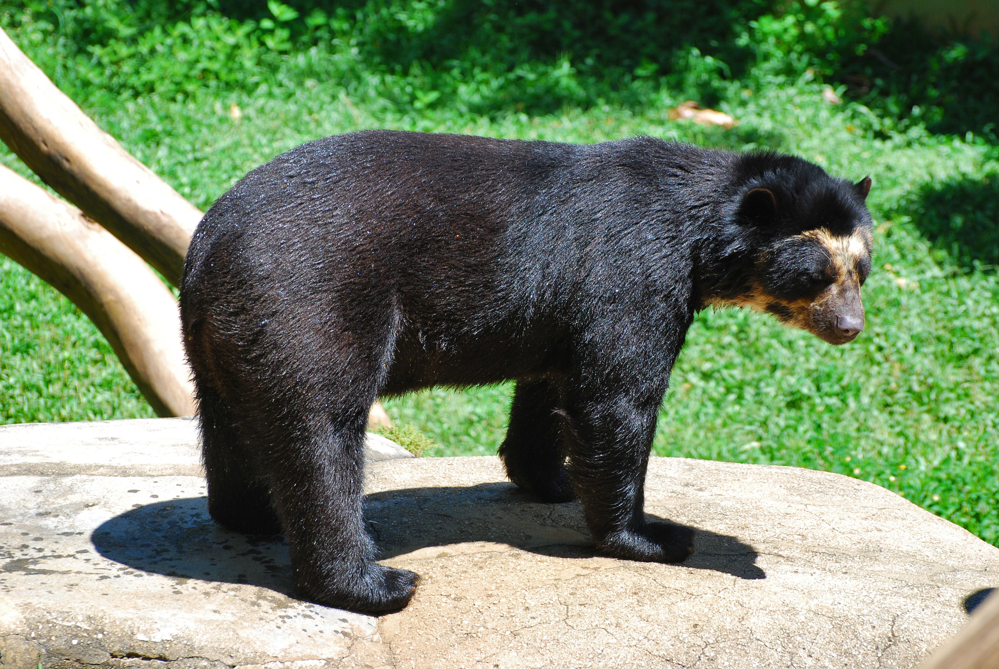
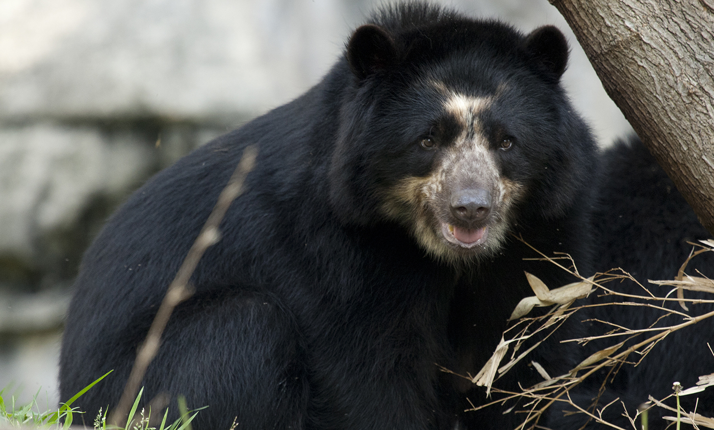
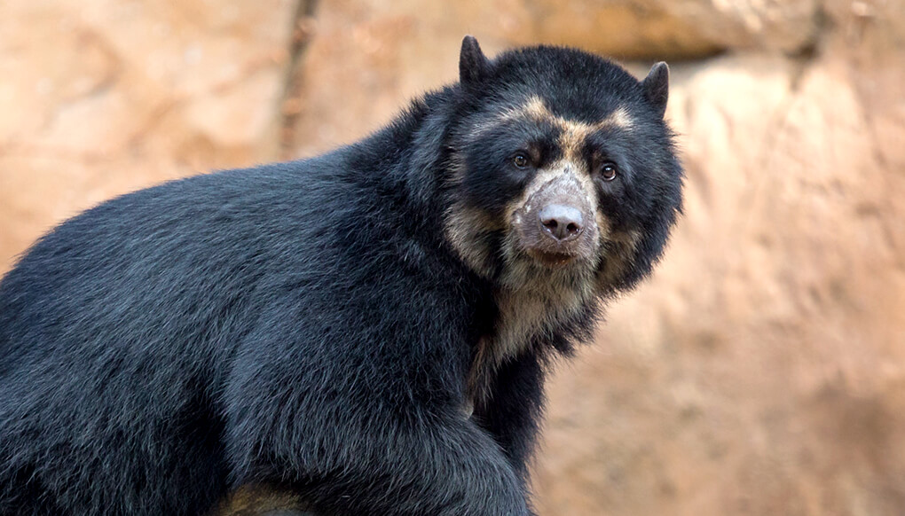
Andean bears (Tremarctos ornatus), also known as spectacled bears, are
distinctive bears native to the Andes Mountains in South America.
Recognized by their unique facial markings resembling "spectacles,"
these bears typically have black fur, and some individuals may display
variations in color. Adult Andean bears generally weigh between 100 to
200 kilograms, with a shoulder height ranging from approximately 60 to
90 centimeters.
As herbivores, Andean bears have a diverse diet, including fruits,
berries, and vegetation. They are also known to consume insects and
small mammals. These bears are exceptional climbers and often use
trees for resting, feeding, and escaping potential threats.
Andean bears are primarily solitary, and their elusive nature makes
them challenging to study in the wild. They play a crucial role in
shaping their ecosystems by influencing vegetation through their
feeding habits and aiding in seed dispersal.
Conservation challenges for Andean bears include habitat
fragmentation, poaching, and human-wildlife conflicts. Efforts focus
on creating protected areas, promoting sustainable land-use practices,
and raising awareness to ensure the survival of this unique bear
species. Andean bears hold cultural significance in the Andean region
and are symbolic of the rich biodiversity found in South American
mountain landscapes. Preserving their habitats is vital for
maintaining the ecological balance of the Andes.
Sloth Bear
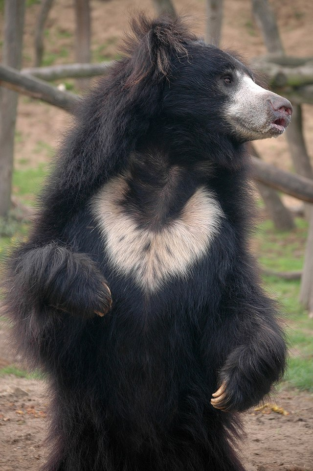
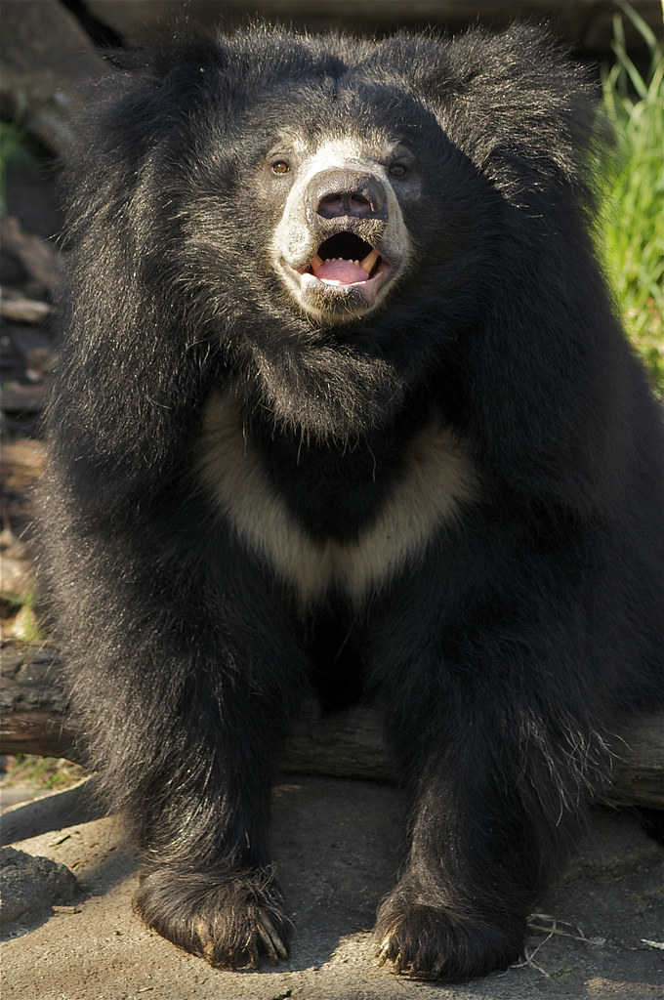
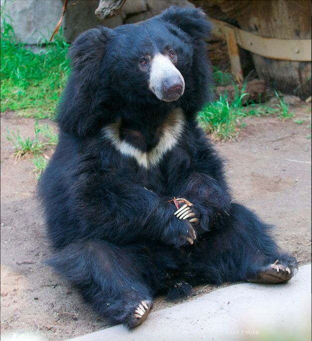
Sloth bears (Melursus ursinus) are distinctive bears native to the
Indian subcontinent. Recognizable by their shaggy, dusty-black fur and
a distinctive white "V" or "Y" shape on their chest, these bears have
a unique appearance. Adult sloth bears typically weigh between 55 to
95 kilograms, with a height at the shoulder ranging from approximately
60 to 90 centimeters.
As omnivores, sloth bears have a varied diet that includes fruits,
insects, termites, and occasionally small mammals. Their long, curved
claws are adapted for tearing into termite mounds and ant nests. Sloth
bears are also skilled climbers and swimmers.
Sloth bears are known for their solitary nature, and they are
primarily nocturnal, making them elusive and challenging to study in
the wild. They often use trees for rest and refuge during the day.
Conservation challenges for sloth bears include habitat loss,
human-wildlife conflict, and illegal wildlife trade. Efforts focus on
creating protected areas, mitigating conflicts, and raising awareness
to ensure the survival of this unique bear species. Sloth bears hold
cultural significance in the region and are emblematic of the rich
biodiversity found in the Indian subcontinent. Preserving their
habitats is essential for maintaining the ecological balance of the
landscapes they inhabit.